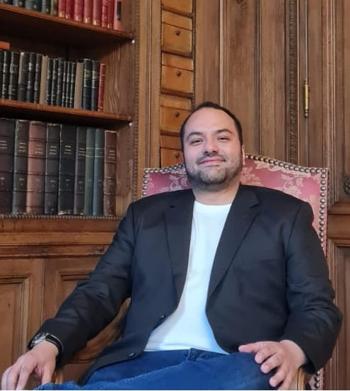

I am a Doctoral Researcher at the RTG Dynamics graduate program at Humboldt-Universität zu Berlin, jointly coordinated with the Hertie School of Governance. My research investigates how social networks mediate the relationship between institutions, civil society, life events, and political attitudes. Using comparative and longitudinal data, I explore how inequality and welfare regimes shape the structure and composition of individuals' personal networks—and, in turn, how these networks influence interpersonal trust and broader political orientations.
Between March and May 2025, I was a visiting researcher at the Swedish Institute for Social Research (SOFI) at Stockholm University, within the Social Policy Unit.
I hold a Master's in Sociology from the Pontifical Catholic University of Chile and a Bachelor's from the University of Chile. Prior to my doctoral studies, I was Technical Coordinator of ELSOC — COES, specialising in survey design, panel data, and network analysis.
Stories forthcoming. This space is reserved for narrative work — fiction that orbits the same questions as the research: class, networks, and the texture of social life.